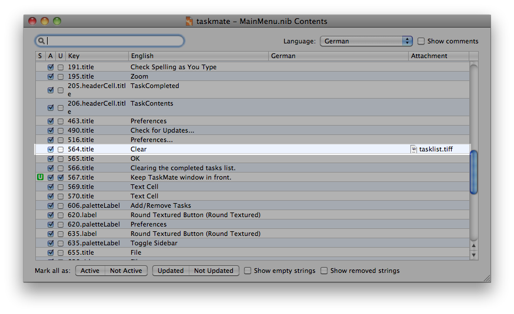

In certain cases you might deem it useful for your translators to attach screenshots of particular xibs to the Localizer file, so your translators will be able to link certain strings to the context of the user interface or get an overview of the space available for localizations.

To attach screenshots, double click the file you want the screenshots to be attached to in the File List within the Localization Manager main window. The Contents windows with all strings contained in the file will open. Now simply drag and drop your screenshot into the line of the respective string. Repeat this process for any further screenshots you want to attach.
Note:
If you want one particular screenshot to be attached to several strings within a file, simply drag and drop the first screenshot you have inserted to the other strings lines in the Contents window.
Any screenshots added in the Contents window will be exported to the Localizer files and your translators will be able to open these screenshots in the localizer to gain contextual information on the particular string. See Localizer Help for details on how to work with screenshots in the Localizer module.
Are you looking for a certain topic? Then take a look at the topics list.
Next chapter: Creating the Localizer files